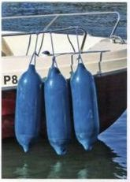
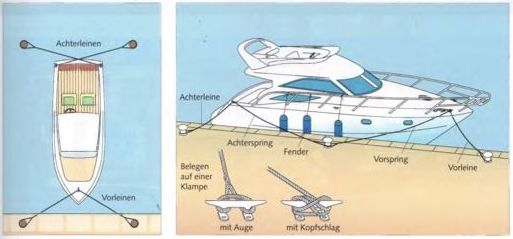

Festgemacht wird langsseits an einem Steg oder einer Pier oller in einer Stegbox mit Mahlen, je nach den örtlichen Gegebenhei ten
5eirr. längeren langsseitshegcn wird Zusatz-hrh zur Vv'- und Achterleme eine Vor- und •chtersprirg ausgebracht Die So ring fesselt das Soor. Es kann sich nicht mehr in der Ungsnchtung bewegen oder mit dem Bug oder Heck abscheren, wie es sonst bei vor-bcnem oder achterhcnem Wind oder Strom geschehen wurde.
.'■sehen Rumpf und Steg oder Pier kommen schützende Fender. Sie müssen so filiert •erden, dass sie sich nicht auf den Steg oller jn Deck schieben können und somit nutzlos •erden. Beim Ablegen sind sie sofort herein -zunehmen Es gilt auf unseren Gewässern als unseemannisch, mit außenbords baumelnden Fendern zu fahren.
In der Stegbox «erden zwei Vor- und Achterleinen ausgebracht, die genügend Spiel haben müssen, damit das ßoet n.cht In den Leinen hangt Die Vorleinen sollten möglichst breit auseinander festgemacht wer den, dann wirken sie wie ein Federsatz und das Boot ruckt bei Schwell nicht so stark in die leinen. Die Achterleinen sollten über kreuz festgemacht werden, damit das Boot mit dem Heck nicht zu «eit seitlich ausweichen kann.
Die Bezeichnung der leinen bezient sich auf das Vor- und Achterschiff. Die Achterleinen können also zu den Achterpfahlen führen, aoer ebenso gut zum Steg, wenn cas Boot mit dem Heck zum Steg liegt
Die Lange der Festmacher wird nicht vom Steg, sondern von Bord aus reguliert, damit kein überschüssiges leinenbunsch auf dem Stegherumliegt.
Fender
s oll $cnuiz::Jste' aus Gummi oder «unszitotf
Es gibt sie in den verschiedensten Famen und Großen- zylindrnci*. kugel - und Dirnenfamiqe.
aus Feststoff ju! aufpurpture
DAS BAUMATERIAL
Schlauchboote werden aus PVC. PU oder bgchfestem Hypa’on gefertigt.
ütr übliche Werkstoff *ü> den Bau von Motor “aoten ist glasfaserverstärkter Kunststoff (SEK). Senenyacnten aus Kunststoff gibt es als tu einer Lange von etwa 20 Metern.
:;r größere Einzelbauten verwendet man «fit Aluminium oder Slanl
Mlz spielt nur notfi eine verschwindend geringe Rolle.
ätahl-Seriengachten - eine Spezialität der •uliardischen Boctsbauer - gibt es ab unge -jur 10 m lange
-■eenle Ben- einer 1B- m-'ac W. (He es bei
>;irh«ei$e mit 2. ?60 PS aut SS km/h bringt;
1 Generat O'
2 figrerkrbinr mi Cccce'Mtt-VWC -Baurn « Dusche
< Niedergang;. Kabine und Maschinenr**"
4 ärgenturer Mascmnenraum ■! 2«ill<r^smotcrenanl;;e
5 Wassertanks
S Brennswttanks
1Gasieka Dine mit l-forangoi Etagenbetten und M-Raum m H Dusche
I Niedergang;-.-. Vorschiff
9Pantry {•cfltese) «mt mehrflammigem Hera
18 Tacltefignerka One uder große Gistekablne a't Dcppe'bettfiWi -Raum mit Dusche
11 Abgesch'ossenes Mannsc N*tslogis mit »sjrn. WC und Waschberken Zugang arc" ein Vcesönffsiu*
12 »eitenkasten
BOOTSTYPEN
Vielfältig sind oie formen und Typen der Motorboote. Ihre Bezeichnung erfolg' nach gewissen charakteristischen Baumerkmalen oder der Art der Motorisierung Auch das kleinste offene Ruderding wird tum Motorboot. wenn man einen Außenborde’ an den Spiegel hangt
Schlauchboote gibt es in drei Ausführungen Erstens als zerlegbares Boot bis zu ca. 4,Sm lange und tragbaren Außenbordmotoren bis ca. 20 PS.
Zweitens als Schlauchboot nach Ol N 2820 mit luf(gefüllten Schlauchen, die üblicherweise mit mehr als zwei Kammern versehen sind. Damit ist das Boot auch bei Beschädigung einer lultkammer immer noch schwimm-fahig
Und drittens als sogenannte RIBs (Rigid inflatabie Boat), bei denen der Boden starr aus GFK gebaut ist
Schlauchboote werden üblicherweise angeboten bis zu lange von ca 6 m und einer Motorisierung bis ca. 90 PS (66 kW).
Außewbotder-Sportboote naben ein eingedecktes Vorschiff und zwei oder vier Sitzplatze, auf einfachen Booten als durchgehende Bank, auf komfortableren Versionen als sogenannte 8ack-to-Back Sitze angeordnet. Diese lassen sich als Sonnenhegen ausziehen Außerdem gibt es meist kleine Stauraume ar den Seiten und hinten neben der Motorwanne. Es handelt sich um sehr schnelle und sportlich zu fahrende Boote mit einer Motorisierung bis zu etwa >00 PS (2Z kW) und bis zu einer lange von etwa Sm. Ab dieser Größenordnung beginnen die
Innenborder-Sportboote gelegentlich als Runabouts bezeichnet. Sie haben einen
< Scfcüucnboo: v Sponecotau Au Scdc-der
Einbautank, im Übrigen aber unterscheidet sich das Interieur kaum von den Außen borderbooten, Im Ubergangsbereich wird oft das gleiche Boot in einer Außenborder und in einer Innenborderversion angeboten. Größere Boote bieten natürlich mehr Fahrkomfort und eine umfangreichere Instrumentierung. lange bis etwa 6,80 m, Motorisierung bis zu etwa 120 PS (12S kW).
Daycniiser haben die eleganten Unten eines Sportbootes, well ein Kajütaufbau fehlt, sind ater reine Kajütboote, nur wurde die Kajüte ins Vorceck integriert. Sie enthalt meistens nur kleine Ablagen und zwei Schlafplätze, manchmal auch noch eine kleine Kochstelle mit Spule (Pantry). Der Kajutraum muss zwangsläufig meong ausfallen und biete: wenig Wohnkomfort. Wie die englische Bezeichnung bereits andeutet - em mehr für Tagesfanrten gedachtes Boot lange bis etwa 2,20 m, Motorisierung bis zu etwa 200 PS (146 kW), mit ein oder zwei Maschinen.
Eine Mischform ist die sogenannte Halbkajüte mit einer Art hinten offenem Hard-
>oc de' meistens dis über den Steuerstand "t:ht Darunter befinoen sich Schlafplatze w*d Pantry. Das Cockpit lasst sich teilweise in :tn «Wehrbereich« m„einbeziehen Meist Modelt es sich um kleinere 8oote bis zu etwa S,80m large mit Außen- oller Innenbordern st «erden aoer nur noch selten gebaut, lajutboote haben eine geschlossene Kajüte. •» der sich oft auch cer Steuerstano befindet Iv der üblichen Vorderkante kann noch eine «• -erkajute kommen Sie bieten Bescheide -r-n bis angenehmen Komfort, denn in diese
Kategorie fallen 8oote zwischen7und 12 m Lange. Oie früher geläufige Bezeichnung »Kreuzer« oder auch »Motorkreuzer« für Boote von etwa 8,50 m an aufwärts ist heute weigehend aus dem Sprachgebrauch verschwunden. Sie charakterisiert jedoch ganz gut die Emsatzmoglichkeiten: cs sind 8cote, rn't denen man längere Reisen (Toms) unternehmen kann. Sie verfügen über genügend bequeme Schlafplane, ein vom Wohnraum abgetrenntes WC mit Dusche und eine voll ’unktonsfahige Küche (°antty), außerdem
P Sportboot mit Innenborde'
< Oayc Mser mit Scbtupfkajüte
& Moio'i4<nt für Hccmeefarrten ausreichenden Stauraum für den erforderlichen Proviant und entsprechend große Trinkwasser- und Irelbstofftanks. Häufig haoen sie, zumindest die größeren Boote, einen zweiten Steuerstand auf dem Kajut-dach, die sogenannte Flybndge Mit Sofa banken ausgestaltet, erreicht sie oft Cie Dimension eines kleinen Sonnenoeos.
Em Kajütboot oder Kreuzer kann mit ein ooer zwei Motoren, mit Benzinern oder mit Dieseln bestückt sein Genau wie die Motoryachten Das ursprüngliche Kntenur für eine Motocyacht war Sie musste mehr als ein Deck haben. Auf jeden fall sine es Yachten ab etwa 13 m lange mit mehreren getrennten Wohn-, Schlaf- und Sanitarrau-men, mit Mannscbaftslogis für den Bootsmann oller weitere bezahlte »Hande«, ihre Tankkapazitat ist für längere Fahnen ausgelegt
JB RUKO UMS BDOf

